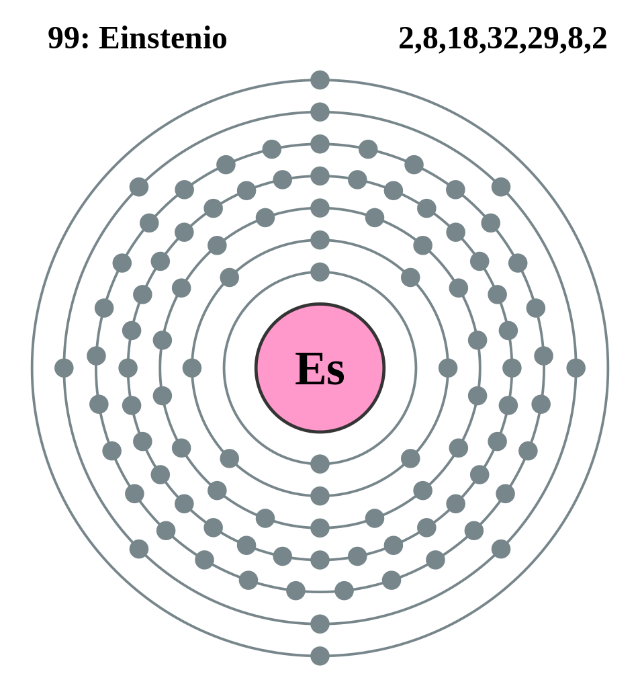

|
|
||
|
EINSTENIO Elemento químico, símbolo Es, número atómico 99, miembro de la serie de los actínidos de la tabla periódica. No se encuentra en la naturaleza, sino que se obtiene de manera artificial por transmutación nuclear de elementos más ligeros. Todos los isótopos del einstenio son radiactivos, con vida media que abarca de unos pocos segundos hasta cerca de un año. El einstenio es el actínido más pesado de aquellos en que puede determinarse esta propiedad. El metal es químicamente reactivo y muy volátil, se funde a 860ºC (1580ºF); se conoce una estructura cristalina. El einstenio no se da en la naturaleza, y no ha sido encontrado en la corteza terrestre, por lo que no hay motivo para considerar sus efectos sobre la salud |
 |
DATOS Número Atómico: 99 Peso Atómico: 252.0829 Electronegatividad: 1.3 Configuración Electrónica:[Rn]5f117s2 Estados de Oxidación: +2,+3 No. de Electrones de Valencia: --- |